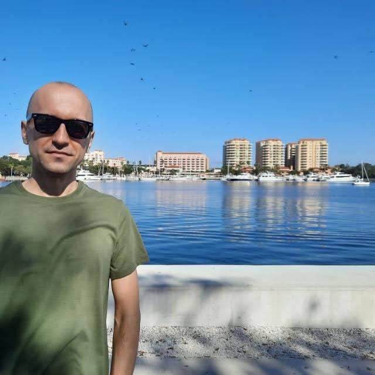

Published: 01/10/2022
Hi everybody, my name is Ndricim Junuzi and I just recently moved to live permanently in US with a Diversity Lottery Visa which is a US Government program and it’s a yearly award for 50,000 places and millions of people around the world participate as potential candidates but the number is so limited and for this year I was so lucky one of those places was mine, I just still can’t realize it’s happening, my life has changed forever and I am not just a tourist here, this is my new home country now, I could be an American just like you after 5 years of living here. Even If Nostradamus told me a year ago my fate that this is going to happen, I wouldn’t have believed him and probably would make fun of him as he was a gypsy fortune teller.
Anyway let’s get to my story how I found America to be and that from an outsider perspective. Everything seems to be so different from my country from where I come (Kosovo) and during my flight (from Pristina to Zurich airport and then the flight through Atlantic ocean to Chicago continuing for a final check in destination Tampa, Florida - by the way my brother who lives in US paid the ticket), many thoughts crossed my mind starting with how many immigrants before me has passed the same road to America through centuries – English, Dutch, Germans, Italians, Irish etc (ok maybe not everyone of them with airplanes – mostly probably with overcrowded so called death ships) but anyway it’s the same road of mixed emotions where new hope is blended with a sense of inferiority (don’t get me wrong I came in US holding a Master’s Degree in Accounting and a ten plus years professional working experience but still the level of development of US in any aspect of life comparing to my recently established new country – Kosovo which is not even 15 years old, inevitable makes you feel that way) uncertainty, loneliness and a little guilt because of the escape from your own family and country which I used to live for almost 35 years, just for a better life opportunities.
In the dark winter afternoon our plane arrived at Chicago airspace, the December windy weather made it so difficult for all of the passengers especially for the pilot which it took him to make 3 going around circles so called “a holding pattern” because the air traffic control didn’t allowed him to land, and I don’t know how he made it to navigate and land on those conditions but later we read the news the winds were 62 MPH. Anyway that caused us a 2 hours delay plus an hour wasted taxing the plane, in total three hours burned which made me lose my transit airplane to Tampa. After a 12 hour flight I was so exhausted and just wanted to crash and sleep somewhere even if it was a carton box around some corner at 5 terminal giant O’Hare Chicago airport. But amazingly I was so welcomed by the wonderful staff of Airport (hence I thank Mr. Mathew my gratitude to your sir) which immediately advised and helped me how to book a free flight ticket for the next morning and also get a free one night hotel stay after making a complaint to my flight operator in this case Swiss Air. After that, everything went smoothly and I deeply enjoyed the Hilton Hotel one night stay which I used it wisely (I fall dead sleep soon as entered my room) and in the early 5 AM morning the van came and pick us the only three passenger from the hotel and send us to catch our flights).
lly after 2 days of travel I arrived at my final destination Tampa, Florida. My brother picked me up from the nice airport, the weather was sunny like summer completely different from my country which in December can go to minus 13 Fahrenheit and it’s the only thing I can get used to it because now I’ve lost the seasons of the year but strangely I like it as days pass by. After a short drive we arrived in his house which is located in a city called Clearwater, a nice name for a city I thought. Anyway soon after I met his kind wife and two lovely kids which the youngest of them of 18 months old I had never met before.
Since then in these 3+ weeks of my residence in Clearwater, I wanted to go out every single day and learn, watch, listen and visit so many places in Pinellas County. Vast and remote places in Florida seems to be a common thing here, locals say to me lucky you came in Florida this time of the year meaning the winter here because imagine what summer here could be (I am preparing myself mentally and physically), another thing which I found difficult to learn was air conditioning in every place possible inside all the buildings and the contrast of cool versus hot. I found the large green parks to be very exiting (Eagles Park, Florida Botanical Gardens and Philippe Park with the most perfect ocean view and relaxing spaces), we drove from Largo Indian Beach to the Clearwater beaches which are super fun and we spent our Christmas day walking in their white clear sand, there were so many tourist in them from all over US. Full crowded supermarkets in Clearwater during the holiday season were interesting places to visit as well which we did and a whole collection of new clothes was bought to me as a gift by my brothers and his wife for which I always be thankful (because I came in US as a light traveler with only a cabin luggage), it’s like a shopping culture here from which you can’t control yourself spending money, as a result everybody buys something soon as it enters a retailer regardless of a need for a merchandise. We dined at a fine restaurant called Carrabbas near our house In Clearwater which I tasted the most delicious wood fired grilled salmon and where the waiters were kind.
The other day we went to explore the city of Saint Petersburg which I immediately fell in love at the first sight, because of its so many cafeteria, bars and night clubs and of course the urban architecture of the inner city buildings and that feeling from which I can’t run away no matter where I go it represents me and makes me feel relaxed, it’s my natural habitat, it reminded me my home country where I grew up and where the café culture is so popular. Some other time we went visiting a very nice place called Safety Harbor, again a spirit and mania for good restaurants, cafeteria mixed with interesting old painted wood houses and endless vegetation, reflected more of a European oasis in a middle of America.
As you can see this almost full month of mine was like a honey moon from which I know it will end soon and I’ve got to get back on earth, back on reality meaning settling myself down, starting to apply for a job, starting to understand how the federal and local system works, learning the taxes, get information about the rent and the prices and all the thing which definitely will affect my daily life in the near future. Because of the Covid situation and the holidays I didn’t received my Social Security Number from the Administration but hopefully in a short time I will get it because it’s very important and it would allow me to make any legal contract whether employment or business.
Nevertheless I will stop for now writing my journal because I like firstly to feel every bit of time I spend here in America like the afternoons riding my bicycle or talking to the neighbors and the locals mostly elders living here for many decades, or just maybe enjoying drinking a beer or a good coffee, establishing my daily routine. It’s a good life here, easy going, God Bless America!
